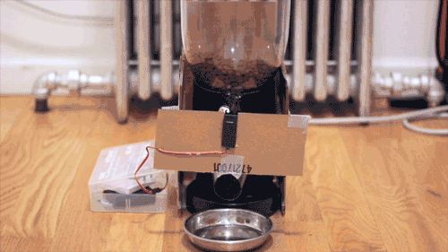

This site is a showcase of work done by Rachel White.
I've been talking about building this thing forever. With the gentle prodding of a few friends who just kept on telling me to just do it, I took the plunge.
The only problem was, I've never worked with hardware before. I've never built a node app from scratch. I've never used socket.io. I've never soldered. And the list goes on.
BUT I DID IT. And even though many mistakes were made, I still learned a ton and figured out the bugs in the end. There's something seriously satisfying about building something technical and getting to hold it in your hands.
This whole project is open source, because I want people to build their own and continue to contribute to the library to be able to add on cool modules and other fun things.
Github Link: github.com/rachelnicole/robokitty
